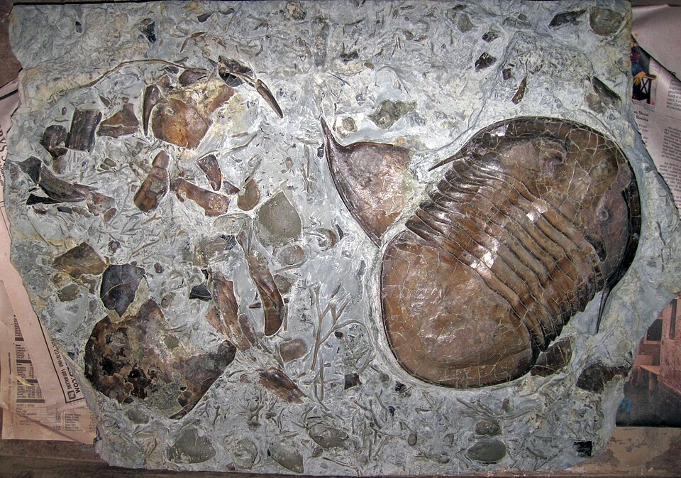

Life Sciences · Deep Time · Evolution · 541 Million Years Ago
For three billion years, life was simple — bacteria, algae, soft blobs. Then, 541 million years ago, something changed. In a geological eyeblink, virtually every animal body plan that has ever existed burst into existence: eyes, shells, legs, claws, and predation — all for the first time. We call it the Cambrian Explosion.
Wind back the tape of life to the early days of the Burgess Shale; let it play again from an identical starting point, and the chance becomes vanishingly small that anything like human intelligence would grace the replay.
Deep Time · What, When, and Why
For the first 3 billion years of life on Earth, the most complex thing in the ocean was a mat of algae. Then, roughly 541 million years ago — near the boundary between the Ediacaran and Cambrian Periods — something changed, and it changed fast.
In approximately 20 million years (a geological instant on a 4.5-billion-year timeline), virtually every major animal body plan appeared. Segmented bodies. Compound eyes. Jointed legs. Mineralized shells. Grasping claws. Complex nervous systems. Active predation. All of it, essentially simultaneously, for the first time in Earth's history.
Paleontologists call it the Cambrian Explosion — and it set the template for every animal that has lived since, including you.
Scientists debate this. Leading ideas: oxygen levels finally crossed the threshold needed for active muscle tissue; Snowball Earth had just thawed, opening shallow coastal habitats; and once the first predators appeared, an evolutionary arms race drove everything else — prey evolved armor and speed, predators evolved better eyes and claws, and complexity snowballed within a few million years.
A body plan (phylum) is an animal's fundamental blueprint: how many body axes, where the mouth goes, how the nervous system is arranged. Humans, fish, and sharks share one plan. Insects and crabs share another. Jellyfish have a third. Almost all ~35 animal phyla alive today trace their origin directly to the Cambrian.
Discovery · British Columbia, 1909
In 1909, Smithsonian paleontologist Charles Walcott was riding through the Canadian Rockies when his horse stumbled on a slab of shale. The rocks were full of extraordinary fossils — soft-bodied Cambrian animals preserved in such perfect detail that you could see their gills, their guts, and their eyes.
The Burgess Shale (in British Columbia) became the most important fossil bed in the world. It gave us our clearest picture of what life looked like 508 million years ago — an alien ocean teeming with creatures unlike anything alive today.
Stephen Jay Gould's 1989 book Wonderful Life brought these creatures to popular attention and sparked a debate: were Cambrian creatures evolutionary dead-ends, or the ancestors of everything living? The answer turned out to be mostly the latter.
Normally, only hard parts — bones, shells, teeth — fossilize. Soft tissue rots in hours to weeks. The Burgess Shale preserved soft bodies because animals were buried rapidly in fine mud at the base of an underwater cliff, in oxygen-poor conditions that slowed decay. The result: creatures with no shells or bones — worms, gills, digestive tracts — preserved in stone.
The Burgess Shale is the most famous, but other exceptional Cambrian fossil beds exist: the Chengjiang biota in Yunnan, China (~520 mya) preserves even older soft-bodied creatures, and the Sirius Passet in Greenland offers another snapshot of early Cambrian life. Together they show the Explosion was global, not local.
The Burgess Shale Creatures · 508 Million Years Ago

These six animals are among the best-known creatures from the Burgess Shale. Each one pioneered a body feature that animals still use today — or died out without leaving a single descendant. Below each portrait is the same drawing system used in the Creature Creator.
The most successful animals of the Paleozoic. Trilobites patrolled the ocean floor for 270 million years. Their compound eyes — built from calcite crystals — were the most complex eyes ever invented at the time. Over 20,000 species are known.
The terror of the Cambrian seas — up to 1 meter long, making it the largest animal on Earth by far. It had stalked compound eyes, a circular toothed mouth, and grasping frontal appendages. Its name means "strange shrimp."
So strange that paleontologists drew it upside down for 20 years. It walked on pairs of stiff spines and had a row of tentacles along its back. Recent analysis linked it to velvet worms (onychophorans) — so it did have living relatives after all.
Five eyes and a flexible snout tipped with a claw for grabbing prey. When Gould first described it at a conference, the audience burst out laughing at its absurdity. It had no close living relatives and left no descendants — a completely unique body plan, gone.
A tiny tank armored with overlapping scales and tall defensive spines. It crawled along the seafloor scraping algae off rocks. Paleontologists debated for decades whether it was a mollusk or a worm — it may represent an evolutionary branch between the two.
A small, leaf-shaped swimmer with a primitive notochord — a stiff rod running the length of its body. That notochord is the ancestor of your spine. Pikaia is one of the earliest known chordates, making it a distant relative of every vertebrate alive today, including humans.
No creatures saved yet — design one above and hit Save!
Evolution · Contingency · Deep Time
Darwin imagined evolution as slow and steady. The Cambrian shows it can be explosive. Body plans diversified faster in those 20 million years than in the 3 billion years before or the 500 million years since. Evolution speeds up when ecological opportunities open up.
Gould argued that if the Cambrian were "replayed," different creatures would survive and humans might never appear. Our existence depends on a chain of unlikely survivors — including a small, soft-bodied chordate (Pikaia) that could easily have gone extinct along with dozens of other body plans.
Your backbone, your two eyes facing forward, your bilateral symmetry, your four limbs — all of these features trace directly to body plan decisions made 541 million years ago. You are not separate from the Cambrian. You are the Cambrian, still running.
When you designed a creature in the lab above, you were doing what evolution did — combining traits (body plan, vision, locomotion, feeding, defense, tail) to produce a working organism. The difference: evolution had no designer. Every combination that survived did so because it worked well enough in its environment. Many that didn't survive are now only fossils.